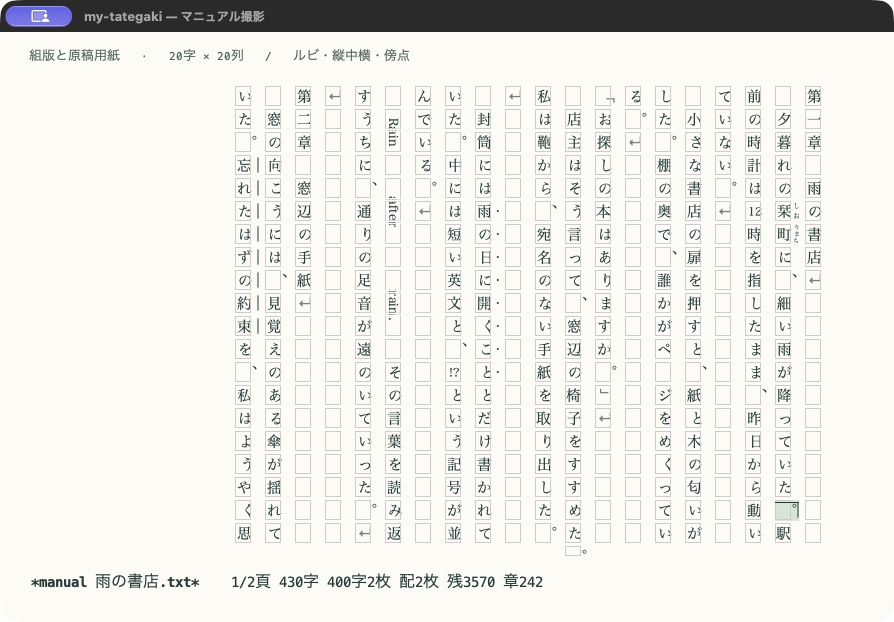

縦に書く。
いつものEmacsで。
一文字を書き、章を組み立て、一冊へ。
my-tategakiは、プレーンテキストを縦書きのまま編集するための道具です。保存も検索もUndoも、いつものEmacsで行えます。


やりたいことから探す
導入から縦書きの開始、保存、横書きへの戻り方まで。
02 / EDIT気持ちよく編集するカーソル移動、IME、検索、余白や文字間を調整する。
03 / TYPESET文章の見た目を整えるルビ・縦中横・禁則・原稿用紙・文字数の使い方。
04 / WRITE長い原稿や脚本を書く字下げ、章の一覧、人物名・台詞・ト書きの入力を助ける。
05 / EXPORT原稿を外へ渡すTXT・DOCX・PDF・EPUB・HTMLをDockerで一括生成する。
07 / HELP表示や操作を確かめる困ったときの切り分けと、環境ごとに異なる対応範囲。
原稿を書く、整える、渡す
- 本文を開いて、縦書きにする
M-x tategaki-editで原文を縦に並べます。注記を見た目に反映したいときはM-x tategaki-typeset-editを選びます。 - 章を見渡しながら書き進める
C-c C-o でアウトラインを開き、C-v / M-v で画面を送ります。ルビや強調はテキストの記法として保存されます。
- 出力を確認して、完成させる
Dockerを準備したら
M-x tategaki-export-all。編集を続けながら、開始時点の原稿から5形式を生成できます。
サンプル原稿で試す
マニュアルの画面は、公開用に作成した次のサンプルを使っています。リンクを保存してEmacsで開くと、ルビや脚本の記法をそのまま試せます。
- 小説サンプル「雨の書店」：章・ルビ・縦中横・傍点・傍線。
- 脚本サンプル：シーン・人物名・台詞・ト書き。
できることと、確認が必要なこと
通常の編集とプレビューはEmacs Lispで動きます。SVGを使う組版表示には対応するGUI版Emacsが必要で、Dockerはファイル出力を使うときだけ必要です。画面・PDF・Office互換ソフト・電子書籍アプリは組版方法が異なり、同じ改ページにはなりません。
主な実機確認はmacOSのEmacs 31.1で行っています。日本語組版や青空文庫記法の全規則に対応するものではありません。確認環境と制限、出力時の確認事項もあわせて参照してください。